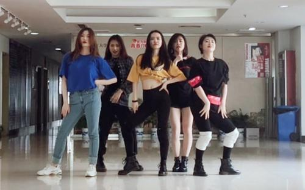

发布人：社团联 宣传部 时间：2021-03-30 浏览次数：236
旋转，跳跃……炫目精彩的舞步定格在此刻，舞者们张开双臂呈“V”，向舞台左侧投去坚定自信的目光——这是浙大DFM街舞社近日在“超能力”专场上的照片。他们打造了青春气息绽放、光芒四射的街舞专场。
心有多大，舞台就有多广
DFM街舞社包括了五个舞队和五个部门。舞队每周有2-3次例训和1次内训，另外开设提高班帮助提升舞蹈技能。
副社长黄念梅说：“为了这次专场活动，我们基本上从寒假就开始准备了。”长达两三个月的紧张筹备，一次又一次的摸索与改动，一支支震撼人心的舞蹈就这样诞生。”尤其专场前的一两个星期，社团内大部分人一下课就会去小剧场练舞，甚至在那里耗一整个周末。”
街舞社有很多表演的机会，比如学院晚会、新年狂欢夜、商演、快闪等等，让社员在这里展现风采，秀出自己。
对街舞，从一而终的热爱
因为热爱，所以永“舞”止境。成员黄念梅坦言自己从高一开始跳街舞，如今已经快进入第七年，街舞已经“成为了我这个人不可或缺的一部分，要是放弃的话真的很舍不得，也从来没想过要离开它”。
黄念梅和街舞社其他社员一样，一直把街舞当作一个放松、娱乐的事情，“有事没事都会过来练练舞”。而且因为知道自己在跳舞上花费了很多时间，所以其他时间就会提高效率，更加尽力地好好利用。
当被问到印象深刻的一件事，黄念梅提到了上学期校外的一个街舞比赛，她亲自编排舞蹈，和许多社员们顶着学业生活的各种高压辛苦排练，自己甚至到了心力交瘁的地步，但在大家的坚持下，最后还是顺利完成了比赛，虽然没有得奖，但台上舞动着的大家和台下加油打气的许多社员，紧紧凝聚着，俨然成为了一个充满斗志又无比团结的整体。

一路相伴，成为更好的自己
他们用舞蹈给青春画上七彩颜色，内心所爱就这样以无言的形式从台上传至台下，一路走来，时至今日。一群人为着一个目标不断前进，这是一个组织发展壮大的根基。DFM街舞社的成员们，正因对街舞共同的热爱和向往而结缘。
社长徐雨葭告诉笔者，大多数成员，初入街舞社，是兴趣所致。在排练的过程中，队长们总是会耐心地指导。这让每个成员对这个舞社产生了归属感，队员们纷纷表示要永远地跳下去，成为更好的自己。